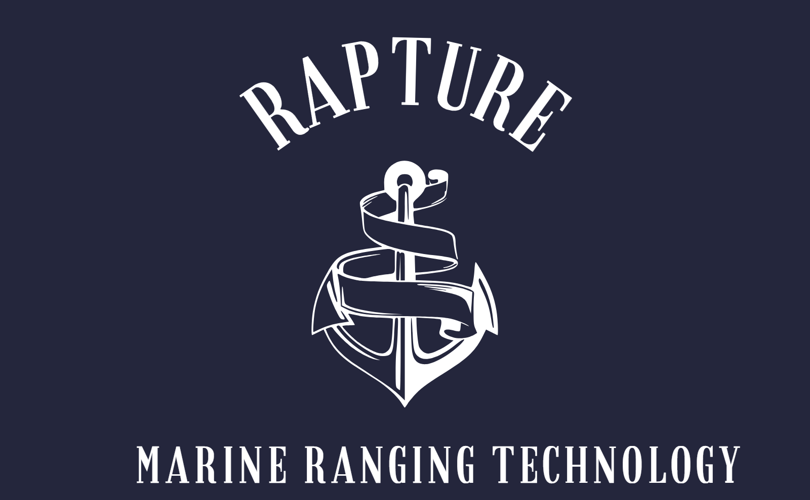

Inicio
Productos
Únete al futuro
Saber más
Babylon RV-100 / RV-200 / RV-200 pro
Transductor CHIRP de amplio espectro
4 canales con DownVision™
RealVision 3D en el interior
Sensor de temperatura del agua de respuesta rápida
Pulso RV-100
Pulso RV-200
Pulso RV-200 pro